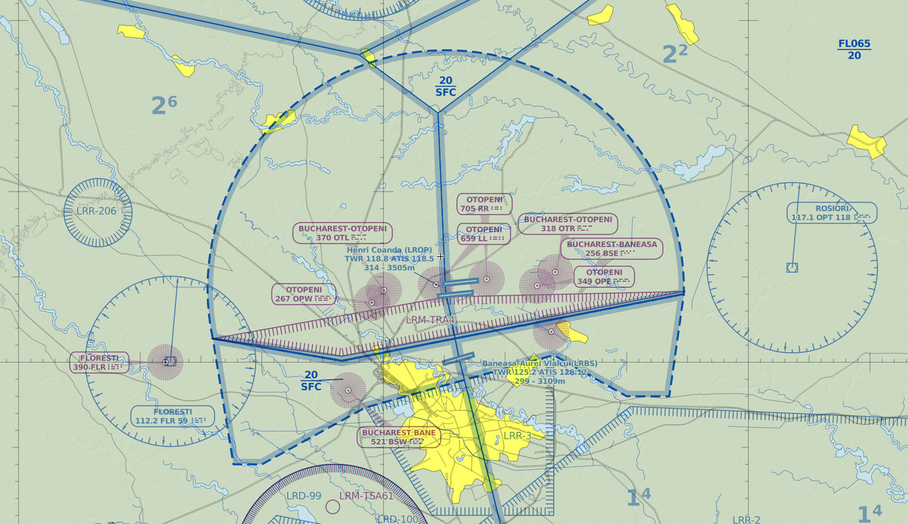

TOWER CONTROLLER (STUDENT 2)
Position Overview
Tower is responsible for all take-offs and landings and gives instructions to effect proper sequencing and separation of aircraft for departure. Tower decides which runways are being used for take-offs and landings depending on wind direction etc. You are also responsible for aircraft on the ground when they are on the runway or are about to cross a runway. Landing aircraft are handed over to Ground as soon as they leave the runway (or sooner at tower’s discretion) Departing aircraft are handed over to the next controller when they leave your airspace.
Otopeni Tower is responsible for all aircraft and ground vehicles movements on the runways. The main objective of a Tower controller is to ensure a safe departure and arrival for aircraft and also to get aircraft on time and to make sure he helps at economy of the airlines.
Local authority has allocated two frequencies for Otopeni Tower. The main one is using the callsign LROP_S_TWR and transmitting on the frequency 120.900, and the second one is using the callsign LROP_N_TWR and transmitting on the frequency 121.850. For both positions the radio callsign is the same: “Otopeni Tower”. The majority of the time only the main frequency is opened (LROP_S_TWR) which control both runways on Otopeni airport. If LROP_N_TWR is online, it controls the north runway (08L/26R) and LROP_S_TWR will maintain control of the south runway (08R/26L). It is easy to remember the ownership of the positions because of callsign designators which are “S” from south and “N” from north.
When you come online as Tower on VATSIM you have to select the active runways from the “Active airport/runway selector dialog” in Euroscope. The selection of active runways is depending by wind conditions (aircraft should always arrive and depart with a headwind), by NOTAM and also by the expecting traffic. The preferred runways at LROP are 08L and 08R which are both equipped with CAT III ILS approach in case of LVP and also ensure a short taxi route for departing aircraft, and a short approach for aircraft which comes from west (the majority of them). So when the wind is calm and also even if there is a light wind favorable for runway 26L/R (till 6-7kt) it is preferred to use runways 08L/R as active. Regarding Euroscope’s tools you only have to select “DEPART” status in departure list just after you give takeoff clearance to an aircraft. Also, as tower, you have to connect the Euroscope ATIS.
You should not forget about coordination with Approach before takeoff. If the aircraft has already contacted you and you haven't coordinated with the approach controller you must ask the aircraft to hold short of the runway until this coordination has been completed. You cannot line up aircraft without coordination because it is possible to receive an instruction from approach which the aircraft is not able to comply with, this will cause the runway to be blocked. The holding point is the line before entry the runway which ensure the safety distance between aircraft. You can also say hold short for an aircraft which will mean that the aircraft will be stopped with the nose perpendicular to the runway. Hold short is used only when you have to wait for other aircraft to vacate the runway or only when an aircraft with a small wingspan is on final. Also, you will receive coordination reports from the Approach controller where you receive the arrival runway for each aircraft and the estimate time that it is from final, this helps you and the Ground controller to manage the departing traffic efficiently.
Priority is different from that of a ground controller. As tower, priority is given based on the aircraft's economy. The arrival aircraft which is on final have priority towards the departing aircraft which is waiting at holding point. You have to be very convinced when you give a take-off clearence when an aircraft is on final, because you can’t risk a go-around for arriving aircraft. How i say before, economy of the airlines is the priority and an aircraft which is waiting at holding point for few minutes will not use more fuel than an aircraft which is going-around and flying pattern to coming again on approach.
Beside of runways you also have under control the CTR Otopeni which is an airspace with a semicircular shape centered on the airport, with semicircular shape north of the airport because on south is bordering with CTR Baneasa. CTR Otopeni covers ground to 2000ft. As tower, you have to control all VFR flights which are flying in within the Otopeni CTR, even if they are not departing or arriving at LROP or at any other airfields within the CTR, flying a traffic pattern or just simply crossing the Otopeni CTR. Control of aircraft within the CTR is procedural (in real life radar is used only for orientation) and you have to request and provide further information to the aircraft. You have to request the current squawk code of the aircraft if they are departing from an airfield other than LROP that are within the CTR (also for Otopeni departures if is unknown) or are just entry in CTR from the outside. In normal conditions the pilot should give you his squawk code on initial contact. For an aircraft flying traffic patterns you can request that they report the leg of the pattern and also any position report (buildings, waypoints, distance from VORs, etc). For aircraft which are not flying in the pattern you can request at any time entry and exit points, followed route within CTR, estimate times for entry or leaving the airspace, altitude, direction of leaving the CTR, speed and other information which help you to separate the aircraft. You have to inform VFR aircraft about the local QNH and weather/runway conditions. You also have to inform IFR traffic and also VFR traffic about any aircraft from vicinity mentioning the approximate distance in miles and clock direction toward other aircraft. Because the top limit of CTR is 2000ft and the upper airspace is TMA Bucuresti which is a class A airspace where VFR flights are not allowed you have to be sure that VFR aircraft are not flying above 2000ft until the exit below of TMA Bucuresti or when they are flying in north of TMA where the bottom limit of TMA is 4500ft. When an aircraft leave the CTR Otopeni on south you have to transfer him to Baneasa Tower on 120.800 and if the aircraft leave the CTR through a other direction you have to transfer them to Bucharest FIC (Flight Information Center) because they entry in a class G uncontrolled airspace. In normal conditions, the pilot should report when he exits your airspace.

Duties
We take a flight from approaching the holding point to handoff to Approach and backward.
We supose DLH1CF is flying from Bucharest Henri Coanda to Munich:
Pilot: Otopeni Tower, good evening,DLH1CF approaching holding runway 08R.
ATC: DLH1CF, good day, Otopeni Tower, hold short runway 08R, report ready for departure.
Pilot: Hold short 08R, will report ready for departure, DLH1CF.
Pilot: DLH1CF is ready for departure.
ATC: DLH1CF, line-up and wait runway 08R.
Pilot: Line-up 08R, DLH1CF.
ATC: DLH1CF, wind is 060 degress with 5 knots, you are cleared for take-off runway 08R, after departure contact Bucharest Approach on freqfency 118.250, good bye.
Pilot: Copied wind conditions, clear for takeoff runway 08R, after departure contact Bucharest Approach 118.250, good bye.
Note: You can jump straight to takeoff clearance should traffic permit this, and if coordination with approach is complete. The coordination with Approach is mandatory, as if the Approach gives you any instruction for aircraft after departure you have to tell them before aircraft entry on the runway (heading, initial climb, etc). After takeoff instruction you can tell to the aircraft to report airborne and after his report to handoff him to Approach. If you don’t tell to aircraft to report airborne you can handoff him to Approach like in example listed above, or after you are sure if he is airborne. When you hold an aircraft at holding point because other is on short final you have to tell to the holding aircraft the reason for hold and information about the landing traffic like distance for example (Example:”Hold position 08R, traffic short final 08R, 3 miles”). If is an aircraft departing and other aircraft approaching holding point you can tell to the second aircraft to “hold short runway 08R, (departing traffic)”. If the ahead aircraft is rolling you can tell to second aircraft "behind departing traffic, line up and wait runway 08R". When first aircraft is airborne to give the takeoff clearance to the second aircraft you have to wait for the separation. The minimum separation time is 2 minutes between a LIGHT or MEDIUM aircraft taking off behind a HEAVY aircraft and a LIGHT aircraft taking off behind a MEDIUM aircraft to avoid wake turbulence. You can read more about wake turbulence separation here. Also, you have to ensure 4 miles interval between aircraft with the same category, 5 miles interval between aircraft with 1 category difference (MEDIUM before LIGHT or HEAVY before MEDIUM) and 6 miles interval between aircraft with 2 category difference (HEAVY before LIGHT). The moment when you have to coordinate with approach position is when an aircraft is approaching holding point. You have to tell to approach the callsign of aircraft and departure runway and procedure (SID name or radar vectors).
Example:
"DLH1CF is ready for departure runway 08R, SOKRU1K departure."
"DLH1CF is ready for departure runway 08R, vectors."
We supose ROT3VR is flying from Barcelona to Bucharest Henri Coanda:
Pilot: Otopeni Tower, good evening, ROT3VR on ILS approach runway 08R.
ATC: ROT3VR, good evening, Otopeni Tower, wind is 050 with 4 knots, runway 08R clear to land.
Pilot: Clear to land runway 08R, ROT3VR.
Note: The extract above is the ideal one. When an aircraft is on approach his landing clearance is influenced by traffic and weather or runway condition. So if the runway is busy for the moment you have to tell to aircraft to continue approach "ROT3VR, continue approach runway 08R". You can also tell him the traffic situation: "You are number two/three for landing" / "Traffic departing". When runway is clear for him you can clear him to land using the phraseology from above. Also you can give speed restriction to aircraft on approach to ensure time for landing clearance: "maintain minimum approach speed" / "maintain speed 140 (or less)". If the aircraft reach 4 miles from the runway and landing clearance is not possible you have to give a go around to the aircraft. When an aircraft is go around you have to give him "maintain runway heading and climb to 4000ft" then to coordinate with approach to see if he has any initial instruction for him and after that handoff the aircraft to Approach. If you say to an aircraft "expect late landing clearance" and the wind condition, in case of impossibility of landing clearance, go around can be given until 2 miles from runway. When you give landing clearance you can tell the aircraft which taxiway to vacate on ("Vacate on D") and also you can tell him to report when runway is vacated.
ATC: ROT3VR, contact Otopeni Ground Control on 121.700, good bye!
Pilot: Contact Otopeni Ground on 121.700, ROT3VR, good bye!
Note: The moment of handoff to ground should be when you see visual the aircraft which vacate the runway or when pilot announces runway vacated. If you have an aircraft on final waiting for his landing clearance and an aircraft report runway vacated, you should give landing clearance first and then handoff the landed aircraft to the ground controller.
| Date | Changes |
|---|---|
| 13.03.2016 | Initial release |